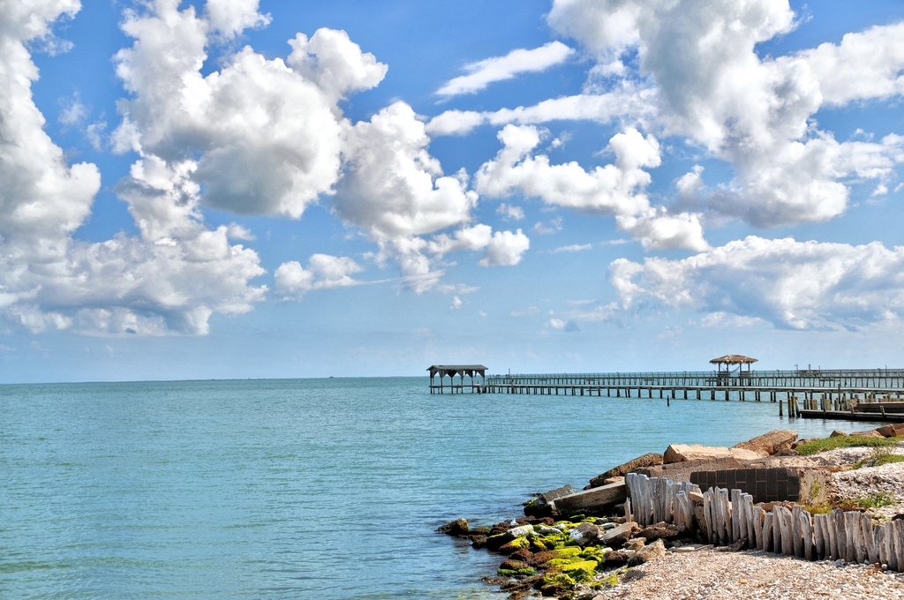

Rockport and Fulton, Texas
Rockport is a city in Aransas County, Texas, United States. The population was 8,766 at the 2010 census. It is the county seat. Rockport is adjacent to the town of Fulton, and many refer to the combined communities as "Rockport-Fulton"; however, Rockport and Fulton are legally separate municipalities.
fishing Rockport
The variety of options for fishing around Rockport is virtually unlimited, making it one of the top destinations in Texas for bay and flats fishing. Copano Bay offers numerous shallow oyster reefs, St. Charles Bay and Redfish Bay offer back water redfish action, while Aransas Bay offers open water reefs for trout. Across Aransas Bay the entire St. Joe shoreline offers inlets and tidal lakes for redfish, flounder, and trout action.
With several boat ramps spread though out the area, access to great fishing is a short boat ride away, regardless of what type of water is being targeted.
The Rockport Municipal Harbor and Cove Harbor are also home to a number of offshore boats that make their way out the Lydia Ann Channel to the Gulf of Mexico for offshore fishing.